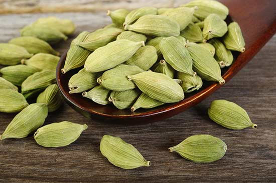

दूब ऐसे दिलाती है माइ्ग्रेन से छूटकारा
दूब एक प्रकार की घास है जिसे धार्मिक अनुष्ठानों के लिए इस्तेमाल किया जाता है। पूजा सामग्री होने के अलावा दूब कई तरह के औषधीय गुणों से भी भरपूर होती है। आयुर्वेद के मुताबिक दूब पर जब ओस पड़ी हो तो उस पर चलने मात्र से नेत्र ज्योति बढ़ती है। साथ ही साथ सिरदर्द और तनाव के लिए भी दूब काफी लाभदायक है। जिन लोगों को अक्सर तनाव रहता है ऐसे लोग दूब को पीसकर उसका लेप अपने पैरों में लगाएं। ऐसा करने पर मस्तिष्क को ठंडक मिलती है और दिमाग की उथल-पुथल शांत हो जाती है।
इसके अलावा जिन लोगों को अक्सर सिर दर्द रहता हो वे लोग दूब को पीसकर उसमें थोड़ा सा चूना मिला लें। फिर इस मिश्रण को सिर पर लगाएं। इससे सिरदर्द से बहुत आराम मिलता है। इसके अलावा भी दूब के बहुत सारे लाभ होते हैं।
ल्यूकोरिया में लाभकारी :
दूब के इस्तेमाल से महिलाओं संबंधी कई स्वास्थ्य समस्याओं जैसे- ल्यूकोरिया, यूरीन इंफेक्शन आदि का इलाज किया जाता है।
एनीमिया में फायदेमंद :
दूब खून बढ़ाने में मददगार होता है। एनीमिया रोग में इसका रस पीने से काफी लाभ होता है।
प्रतिरोधक क्षमता बढ़ाए :
शरीर की रोग-प्रतिरोधक क्षमता बनाए रखने में दूब काफी लाभकारी है। इसमें एंटी-वायरल और एंटी माइक्रोबियल गुण पाए जाते हैं। इस वजह से यह किसी भी बीमारी से लड़ने की क्षमता में वृद्धि करता है।
मुंह के छाले खत्म करे :
दूब का काढ़ा बनाकर उससे कुल्ला करने से मुंह के छाले मिट जाते हैं। इसे पीसकर इसका लेप सिर पर लगाएं तो इससे नकसीर बंद हो जाती है।
मलेरिया में दिलाए राहत :
दूब के रस में अतीस के चूर्ण को मिलाकर दिन में दो बार चाटने से मलेरिया में लाभ होता है।

छोटी इलायची खाने के फायदे ही फायदे हैं
आमतौर पर छोटी इलायची का इस्तेमाल खुशबू और स्वाद के लिए किया जाता है। मीठे व्यंजनों में इसका स्वाद तो और खास हो जाता है। कुछ लोगों को इलायची वाली चाय भी खूब पसंद आती है लेकिन कम ही लोगों को पता होता है कि इलायची एक आयुर्वेदिक औषधि की तरह काम करती है। इसके और भी कई फायदे हैं, जो जानें यहां-
छोटी इलायची एक कारगर माउथ फ्रेशनर है। इसे खाने से मुंह की बदबू दूर होती है। इलायची में मौजूद तत्व मुंह की बदबू दूर करने का काम करते हैं। अगर आपके मुंह से आने वाली दुर्गंध बहुत तेज है तो आपको हर समय एक इलायची अपने मुंह में रखनी चाहिए।
अगर आपकी सेक्स लाइफ अच्छी नहीं है तो इलायची के इस्तेमाल से आपको फायदा होगा। इससे शरीर को ऊर्जा मिलती है, साथ ही नपुंसकता में भी इसका सेवन करना फायदेमंद माना जाता है।
हमारे समाज में खाना खाने के बाद इलायची खाने का चलन है। खाना खाने के बाद इलायची का सेवन करना काफी फायदेमंद होता है। इसमें मौजूद तत्व खाने को पचाने में मदद करते हैं।
अगर आपके गले में खराश की समस्या है तो भी इलायची का सेवन करना फायदेमंद रहेगा। इसके सेवन से गले के दर्द में राहत मिलती है।
इलायची के रसायनिक गुण शरीर में मौजूद फ्री-रेडिकल और दूसरे विषैले तत्वों को दूर करने में मददगार होते हैं। इससे खून भी साफ होता है।